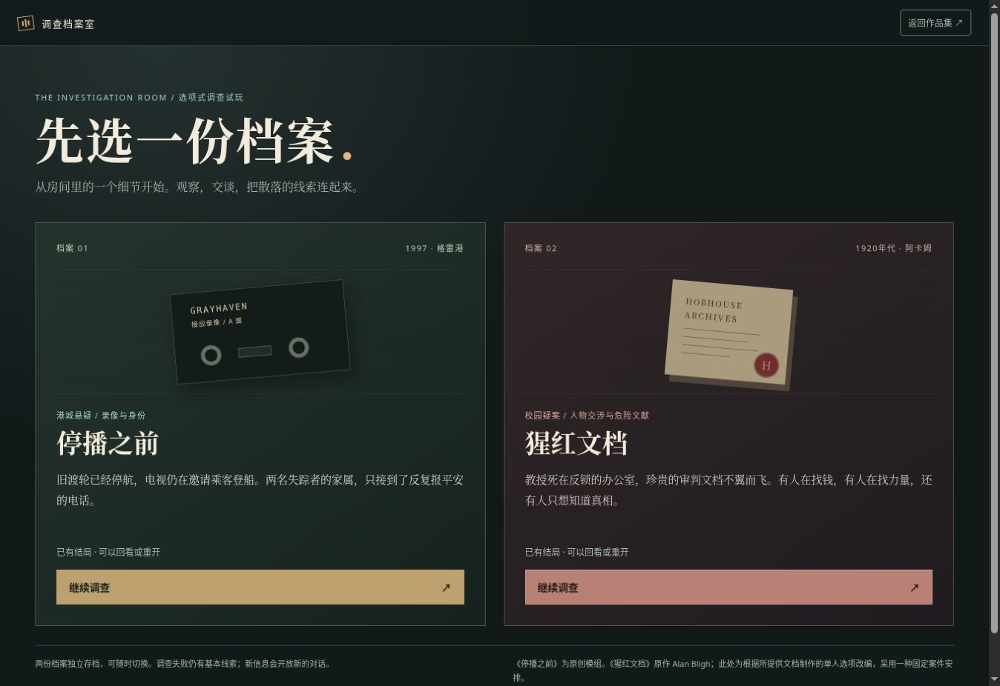

Playable prototype · 2 scenariosThe Investigation Room
A playable investigation about missing people, unreliable recordings and evidence that changes what you can ask. Two Chinese-language scenarios, with independent saves.
My contribution
Scenario and character writing, clue and dialogue logic, interaction prototyping and playtest-led revision.
Before the Broadcast Ends: original scenario. Crimson Letters: single-player adaptation of Alan Bligh’s scenario.